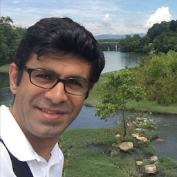

|  | Welcome to my personal page! I am currently a Research Associate at the at UVA. |
Short Biography
I received my M.Sc in Electrical Engineering from Sharif University of Technology, Iran, in September 2012. I was a research assistant at Optical Network Research Lab. (ONRL) since October 2010 working on experimental development of wireless spread time CDMA systems, visible light communications and indoor positioning systems. I am working in the OMCL Laboratory, Under the supevision of Prof. Maïté Brandt-Pearce. My current research focus on visible light communications, indoor positioning, Indoor sensing and optical wireless channel modeling.
Research
My research interests mainly focus on understanding the fundamental limits of communication and sensing systems as well as the design of new techniques that are suitable for practical their implementation challenges. More specifically my research interests include:
Visible light communication and localization systems
Optical communication systems and Networks
Cross-layer design and optimization
Coding and Information Theory
You can also find my professional profiles through the links below:


Latest Updates
May 2021: I defended my Ph.D. dissertation.
January 2020: I received Student Travel Award for IEEE Consumer Communications & Networking Conference 2020
January 2020: I presented a poster at IEEE Consumer Communications & Networking Conference 2020
November 2019: I presented a paper at Asilomar Conference on Signals, Systems, and Computers 2019
March 2018: I succesfully defended my Ph.D. dissertation proposal
October 2016: I successfully defended my Ph.D. qualifying exam